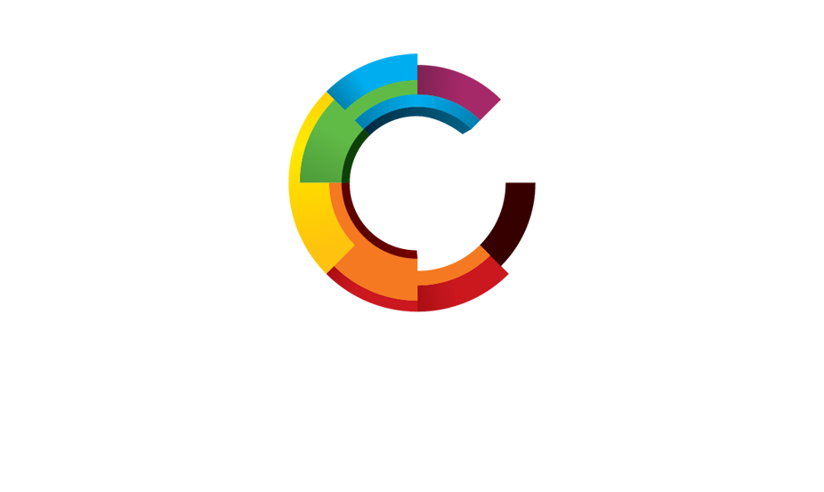

Audiovisual Symposium Sponsors

Visualization Center C is a leading Swedish center for scientific visualization and public engagement, bringing together research, industry, and society to explore and develop visual technologies and immersive media. By supporting the Audiovisual Symposium 2026, the center contributes to both artistic and academic discourse in audiovisual studies.

Immersive Sweden is a national innovation platform dedicated to advancing immersive, spatial, and interactive media across research, industry, and the creative sectors. As a sponsor of the Audiovisual Symposium 2026, Immersive Sweden supports critical dialogue, experimentation, and collaboration at the forefront of audiovisual innovation in Sweden and beyond.
Visual Sweden is a leading Swedish innovation cluster bringing together industry, academia, and public actors to advance visualization, visual media, and applied visual technologies. Through collaboration, research, and innovation, Visual Sweden strengthens cutting‑edge audiovisual practices and sustainable growth in the visual sector.